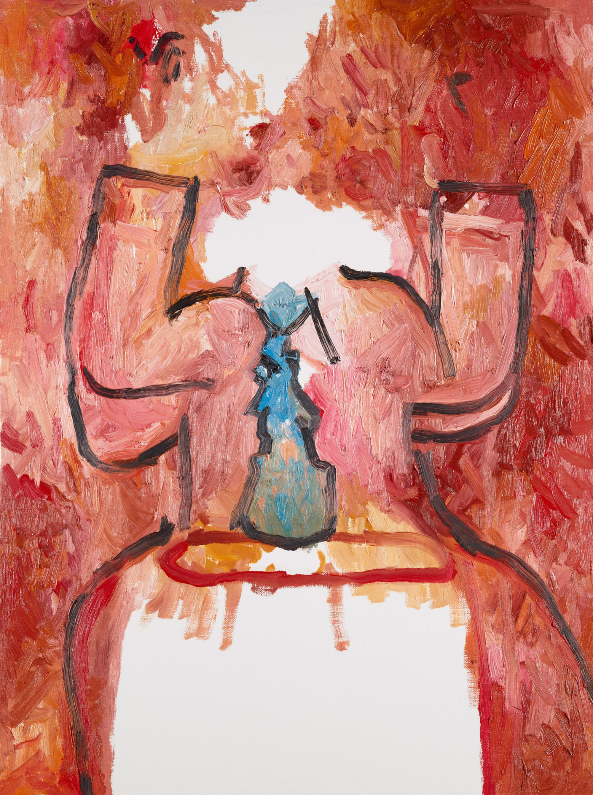

<style>
  figure {
    position: relative;
    max-width: 33%;
    margin: 0 auto 1em auto;
  }
  figure img {
    max-height: 100%;
    width: 100%;
    opacity: 0.5;
    transition: all .2s 0.1s linear;
  }
  figure img:first-of-type, figure img:last-of-type {
    position: absolute;
    top: 0; left: 0;
  }
  figure:hover, figure:target {
    max-width: 33%;
  }
  figure:hover img, figure:target img {
    opacity: 1;
    margin-left: -100%;
  }
  figure:hover img + img, figure:target img + img {
    margin-left: 0%;
  }
  figure:hover img + img + img, figure:target img + img + img {
    margin-left: 100%;
  }

  figcaption { -webkit-transform: translateY(-20em); transition: all .2s linear; }
  figcaption h1 { text-align: center; opacity: 0.5; }
  figcaption blockquote { opacity: 0; }
  figure:hover figcaption * { opacity: 1; }
  figure:hover figcaption { -webkit-transform: translateY(0); }
</style>

<figure id="gutersloh">
  
  <!--  -->
  
  
  <figcaption>
    <h1>Portrait of Paris von Gutersloh</h1>
    <blockquote>
      Young accountant-looking man in chino-type pants + oxford shirt. Rust+orange+brown/red w/ gold hints is color scheme. He is sitting on a small sofa-type chair, hands up @ shoulder level. His eyes look a bit dazed + wild. The texture of the brush strokes has a little frenetic energy. His body + clothes are all outlined in black adding a crisp pronounced young energy. His ocean blue tie matches the chaotic energy that seems to border on the ??? of passion, frustration, youthful vigor + anger.
      <cite>Cheryl, 1/17/13</cite>
    </blockquote>
</figure>

<figure id="lucretia">
  
  <!--  -->
  
  
  <figcaption>
    <h1>Lucretia</h1>
  </figcaption>
</figure>

<!-- <figure id="?"> -->
<!--    -->
<!--    -->
<!-- </figure> -->
